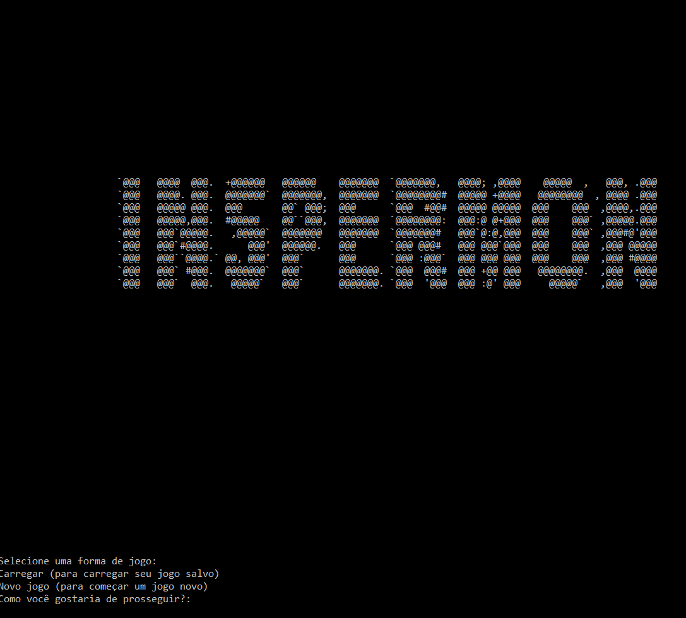

Design de Software - Professor Romero T.
Os alunos receberam a proposta de programar, em Python, um jogo de lógica semelhante ao mundialmente famoso Pokemon, em que mascotes batalham por intermédio de pontos de ataque, defesa e vida, batalhas essas divididas em turnos. Após a implementação da lógica principal do jogo, sugestões de aprimoramento do programa deveriam também ser implementadas.
Como descrito na Proposta, o jogo seria baseado num jogo mundialmente famoso, no qual o usuário tem sempre a escolha entre passear com o seu inspermon (e batalhar), ou dormir (ir para o menu principal). Caso o usuário quisesse passear, ele encontraria inspermons adversários aleatoriamente. Quando em batalha, o jogador iria receber a situação de saúde de seu inspermon e a de seu adversário e, por fim, o vencedor da batalha.
Outras iterações seriam implementadas ao código do jogo, ao longo do andamento do projeto.
Ler mais